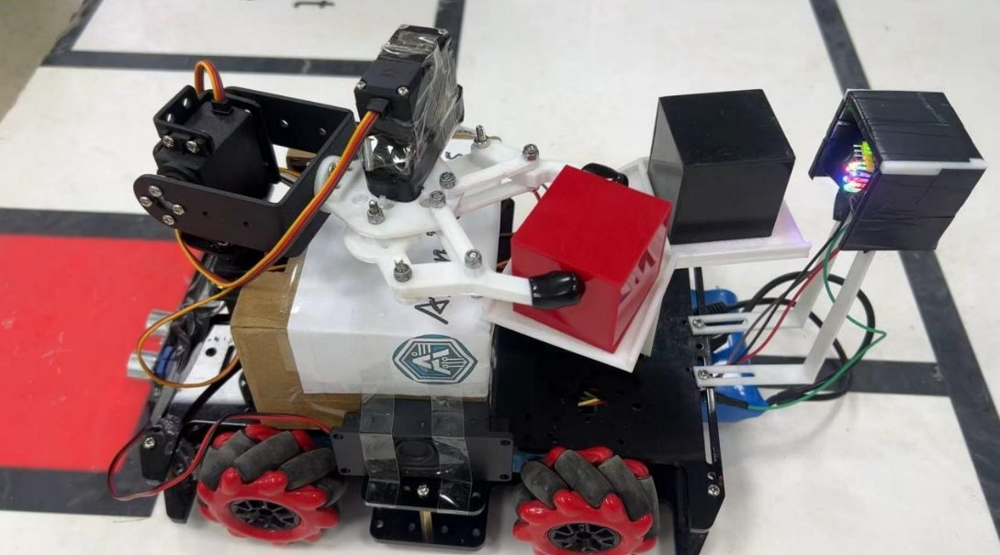

Arduino 取放分拣机器人作品展示
基于 Arduino Mega 2560 的移动取放/分拣机器人项目：本人任 6 人团队队长兼软件工程师，用有限状态机组织巡线、目标确认、颜色识别、舵机抓取、分类投放和回程复位，展示嵌入式控制、传感器联调和任务流程调试能力。
展示模块
有限状态机
离开仓位、巡线、目标确认、抓取、颜色识别、分类投放、回程复位。
离开仓位、巡线、目标确认、抓取、颜色识别、分类投放、回程复位。
传感器联调
巡线误差、超声波距离、颜色置信度、舵机角度和串口遥测。
巡线误差、超声波距离、颜色置信度、舵机角度和串口遥测。
控制输出
PWM 差速修正和状态切换事件，便于复盘任务流程。
PWM 差速修正和状态切换事件，便于复盘任务流程。
指标复盘
用 Python 解析任务日志，统计完成步数、状态占比、巡线误差和遥测完整率。
用 Python 解析任务日志，统计完成步数、状态占比、巡线误差和遥测完整率。
两个工程故事
转弯消隐窗
转弯终止条件是黑线重捕获，起始阶段先加消隐延迟离开原黑线，再武装检测新线；成功率从约 30% 提升到接近 100%。
转弯终止条件是黑线重捕获，起始阶段先加消隐延迟离开原黑线，再武装检测新线；成功率从约 30% 提升到接近 100%。
云台双物块
可旋转云台一次携带两个物块，替代重跑两次；搬运时间缩短约 43%，方案从提出到联调稳定约 2 周。
可旋转云台一次携带两个物块，替代重跑两次；搬运时间缩短约 43%，方案从提出到联调稳定约 2 周。
成效摘要
| 改进项 | 方法 | 量化效果 |
|---|---|---|
| 转弯逻辑 | 黑线重捕获 + 起始消隐延迟 | 成功率从约 30% 提升到接近 100% |
| 双物块搬运 | 可旋转云台一次携带两个物块，替代重跑两次 | 搬运时间缩短约 43%；从方案提出到联调稳定约 2 周 |
实物照片

Real project photo — dual-block carrying (2025). 图中为机器人云台携带红色和黑色物块；照片来自真实项目，和本仓库中的合成 demo 日志分开呈现。
固件核实信息
| 项目 | 已核实参数 |
|---|---|
| 分工 | 6 人团队队长 + 软件工程师；控制逻辑与软件全部本人负责，队友分管机械与硬件装调。 |
| PID | Kp=25 / Ki=0.1 / Kd=5 |
| 云台舵机 | SLOT1=0° / SLOT2=145°（170°−25° 现场修正），smoothRotate 2°/步 + 50 ms |
| 颜色识别 | HSL 阈值 + 3 秒 / 10 样本投票 |
| 超声取物 | 3 次连续采样去抖 |
| 直角弯 / 掉头 | 直角弯为 280–750 ms 延时 + 黑线重捕获；掉头为 1545–1600 ms 定时开环。 |
真实参数以文字表格呈现；公开 firmware 仍是 sanitized skeleton，不发布现场完整调参版本。
项目状态
| 模块 | 实现内容 |
|---|---|
| Arduino FSM | 离开仓位、巡线、目标确认、抓取、颜色识别、分类投放和回程复位，按出发、返回、放置阶段切换逻辑。 |
| 巡线与目标确认 | 记录 line error、PWM 修正、超声波距离和关键状态切换事件。 |
| 颜色识别与投放 | 跟踪颜色置信度、舵机角度和双对象存储/投放逻辑。 |
| 日志分析 | Python pipeline 生成任务指标，pytest 覆盖核心统计逻辑。 |
本地运行
pip install -e ".[test]"
python scripts/run_demo_pipeline.py
pytest
技术关键词
Arduino Mega 2560
C/C++
FSM
Line following
HC-SR04
Servo arm
Telemetry analysis